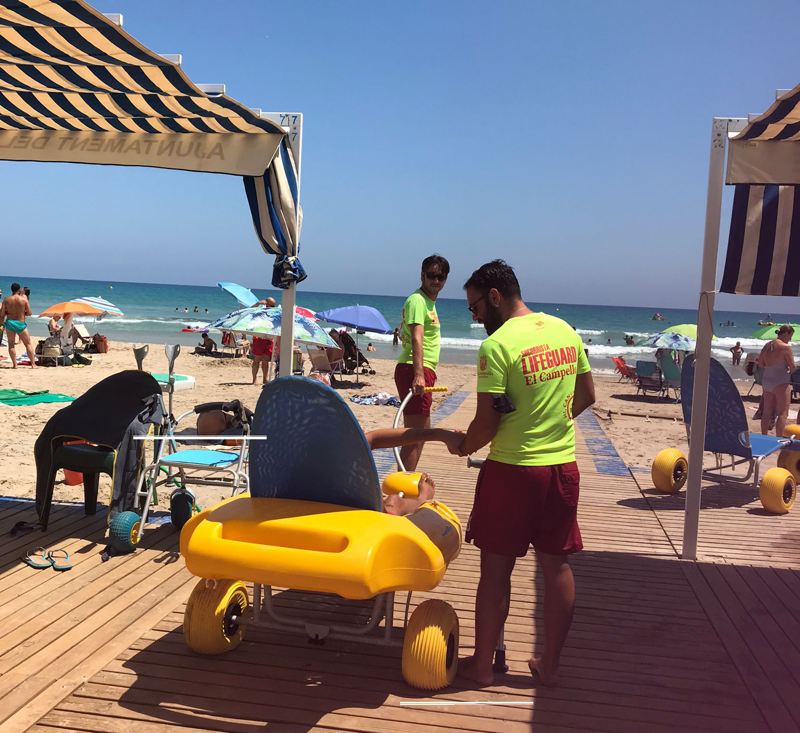
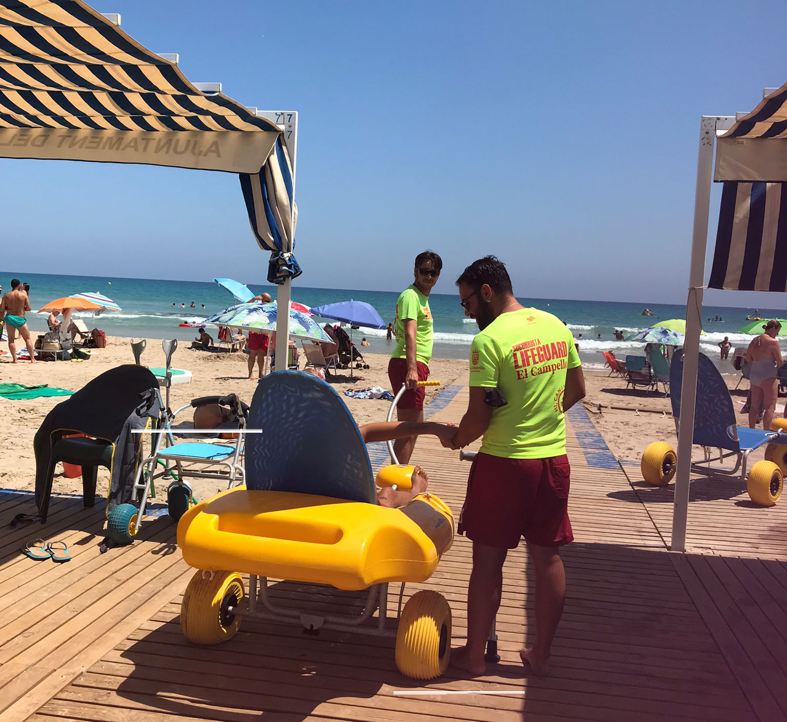

Sobre mí
Me llamo Víctor Escribano.
Soy el creador de la Web “Viajes sin límite”, desde esta web se ofrece ayuda para personas con movilidad reducida. Me licencié en Arquitectura en la Universidad de Alicante y estudié la especialidad de accesibilidad arquitectónica. Soy una persona con discapacidad auditiva y comprendo las dificultades y las barreras a las que nos enfrentamos día a día. Además trabajé como socorrista, en el departamento de accesibilidad durante los últimos 4 veranos. Mi afición es viajar fuera de España y esto me ha permitido tener muchas experiencias y aventuras.
Las personas con movilidad reducida quieren disfrutar de actividades de ocio y de cultura. Durante mis años de trabajo, este colectivo me ha contado las dificultades que se han ido encontrando a la hora de tener una experiencia de viaje. Dada mi condición y el sentimiento de identificación que nos une por ser personas con discapacidad, quiero proporcionar la posibilidad de que descubran nuevas culturas, destinos y formas de ver la vida. Y por supuesto, producir un cambio en la sociedad sobre la forma de pensar, afrontar la vida y saltar las barreras.
Mi objetivo es transmitir una forma de viajar y una manera de disfrutar los viajes donde no exista las barreras arquitectónicas. Además de ayudar a planificar y organizar a través de paquetes de experiencias donde con miniescapada podrás ir a los sitios en la tierra de Comunidad Valenciana para vivir la verdadera esencia de cada destino.
Soy el creador de la Web “Viajes sin límite”, desde esta web se ofrece ayuda para personas con movilidad reducida. Me licencié en Arquitectura en la Universidad de Alicante y estudié la especialidad de accesibilidad arquitectónica. Soy una persona con discapacidad auditiva y comprendo las dificultades y las barreras a las que nos enfrentamos día a día. Además trabajé como socorrista, en el departamento de accesibilidad durante los últimos 4 veranos. Mi afición es viajar fuera de España y esto me ha permitido tener muchas experiencias y aventuras.
Las personas con movilidad reducida quieren disfrutar de actividades de ocio y de cultura. Durante mis años de trabajo, este colectivo me ha contado las dificultades que se han ido encontrando a la hora de tener una experiencia de viaje. Dada mi condición y el sentimiento de identificación que nos une por ser personas con discapacidad, quiero proporcionar la posibilidad de que descubran nuevas culturas, destinos y formas de ver la vida. Y por supuesto, producir un cambio en la sociedad sobre la forma de pensar, afrontar la vida y saltar las barreras.
Mi objetivo es transmitir una forma de viajar y una manera de disfrutar los viajes donde no exista las barreras arquitectónicas. Además de ayudar a planificar y organizar a través de paquetes de experiencias donde con miniescapada podrás ir a los sitios en la tierra de Comunidad Valenciana para vivir la verdadera esencia de cada destino.
 
